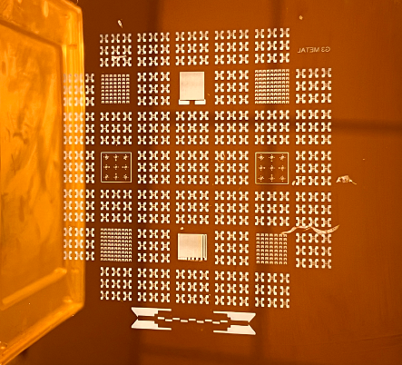
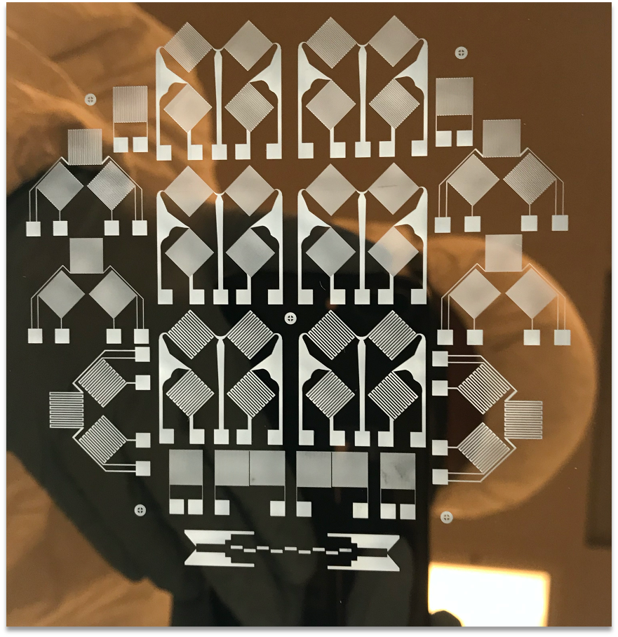
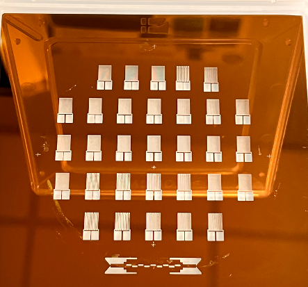
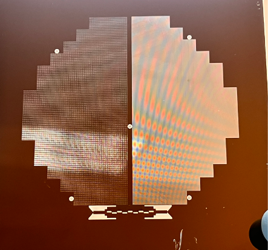
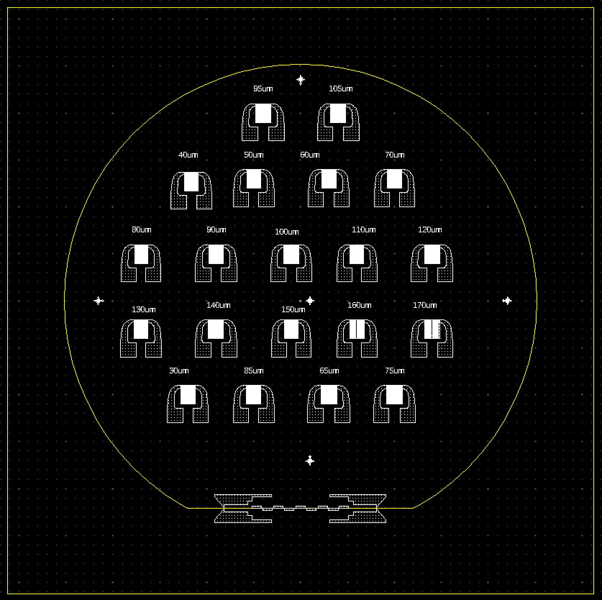
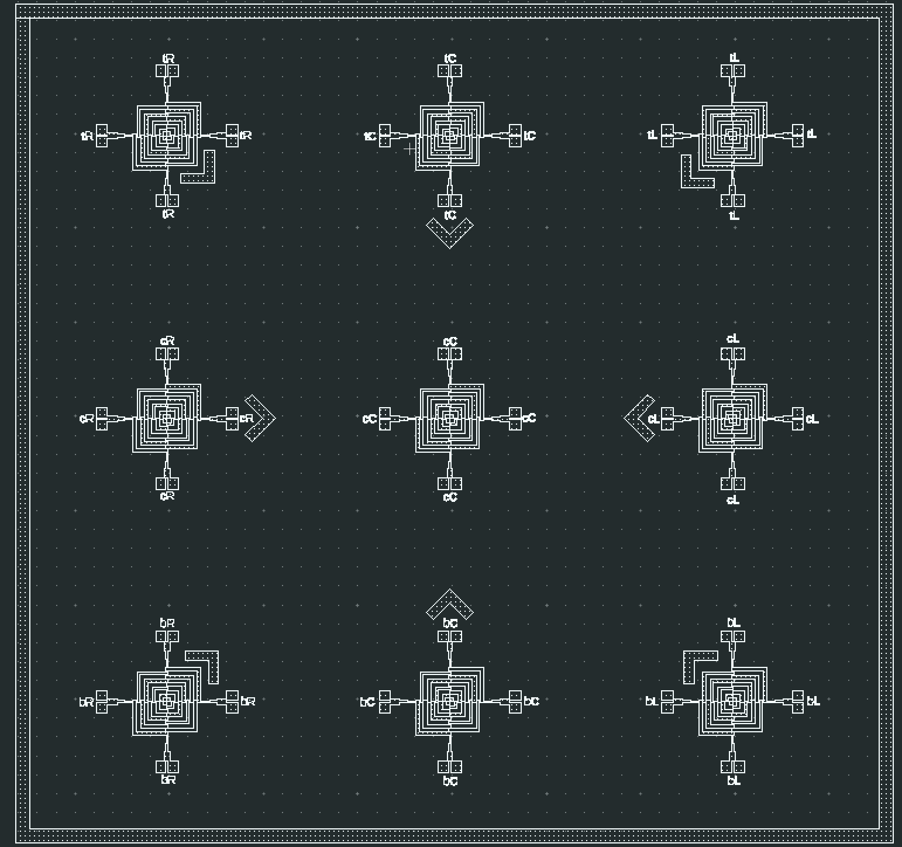

Photomask Design & Fabrication
Microfabrication Mask Layout
LayoutEditor | Laser Lithography | Multi-Project Mask Design
🛠️ Software: LayoutEditor (Free Version)
🔬 Fabrication: μPG 101 Laser Mask Writer (405 nm wavelength)
📅 Period: 2019 – 2024 (Throughout Ph.D.)
🎭 Role: Sole mask designer for multiple device fabrication projects




Project Overview
Photomask design is a critical enabling technology for microfabrication. This project encompasses the complete workflow of designing and fabricating photomasks for various MEMS and microdevice applications using LayoutEditor software and laser lithography (μPG 101). I have designed multiple masks for different devices including MEMS pressure sensors (frontside and backside masks), microsupercapacitors with interdigitated electrodes, strain sensors with serpentine patterns, and micropyramid molds for PDMS casting.
Why Photomasks Matter
Photomasks are the master templates used in photolithography to transfer circuit patterns onto semiconductor wafers. Every microfabricated device - from MEMS sensors to integrated circuits - begins with a carefully designed photomask. The quality and precision of mask design directly determines the resolution, alignment accuracy, and yield of the final devices.
Mask Design & Fabrication Workflow
Step 1: Layout Design (LayoutEditor)
Design patterns using LayoutEditor free version. Key features used: layer management, DRC (Design Rule Checking), Boolean operations, array generation, GDSII export.
Step 2: Mask Writing (Laser Lithography)
μPG 101 laser mask writer (405 nm wavelength) exposes pattern onto photoresist-coated blank mask. Parameters: 4.8 mW laser power, optimized focus.
Step 3: Development
AZ400K developer (1:4 with water) removes exposed photoresist, revealing chromium layer according to designed pattern.
Step 4: Chromium Etching
Chromium Etch 1020 AC (nitric acid + ceric ammonium nitrate) removes exposed chromium for 3 minutes.
Step 5: Final Cleaning
Oxygen plasma RIE removes remaining photoresist, leaving only the chromium pattern on glass.
Tools & Equipment Used
- LayoutEditor (Free Version)
- μPG 101 Laser Mask Writer (405 nm)
- AZ400K Developer (1:4 dilution)
- Chromium Etch 1020 AC
- OAI Mask Aligner (for inspection)
- Reactive Ion Etching (RIE) for cleaning
- Optical Microscope (pattern verification)
Mask Specifications
| Parameter | Specification |
|---|---|
| Mask Substrate | Glass with Cr layer + positive photoresist |
| Laser Wavelength | 405 nm |
| Laser Power | 4.8 mW |
| Developer | AZ400K (1:4 with water) |
| Cr Etch Time | 3 minutes |
| Minimum Feature Size | ~2 μm (limited by laser writer) |
| Alignment Accuracy | ±5 μm (double-side alignment) |
Skills Acquired
Downloads
- Mask Template with Alignment Marks (DXF)
- Strain Sensor with Different Feature Sizes (DXF)
- Micropyramid Mold Mask (DXF)
- Strain Sensor - Spatial Mapping (GDS)
Devices Enabled by These Masks
- MEMS Wheatstone Bridge Pressure Sensor: Frontside and backside masks enabled complete device fabrication (EGN5013C course project)
- Microsupercapacitors: Interdigitated electrode mask for on-chip energy storage (C-MEMS training)
- Wearable Strain Sensors: Serpentine pattern for flexible electronics applications
- Piezoresistive Pressure Sensors: Micropyramid mold for PDMS texturing (used in dual piezoresistive sensor work)
Connection to My Research
Photomask design is foundational to all my microfabrication work:
- MEMS Pressure Sensor: My frontside/backside masks were used to fabricate the Wheatstone bridge device for the Nanofabrication course
- C-MEMS Training: Masks for SU-8 patterning enabled 3D carbon microstructure fabrication
- Sensor Projects: IDE masks for electrochemical characterization of pressure sensors
- Published Papers: Mask designs from this work contributed to multiple co-authored publications (Micromachines 2022, etc.)
Mask Design Examples


Conclusion
This project demonstrates comprehensive photomask design and fabrication capability using LayoutEditor software and laser lithography. Multiple masks were successfully designed and fabricated for MEMS pressure sensors (frontside and backside), microsupercapacitors (interdigitated electrodes), strain sensors (serpentine patterns), and micropyramid molds. These masks enabled numerous device fabrication projects throughout my Ph.D., including the MEMS Wheatstone bridge pressure sensor for the Nanofabrication course, C-MEMS structures for energy storage, and textured PDMS layers for piezoresistive sensors. The skills acquired - LayoutEditor proficiency, DRC, double-side alignment design, and laser lithography operation - are essential for any microfabrication engineer and directly support all my device fabrication work.